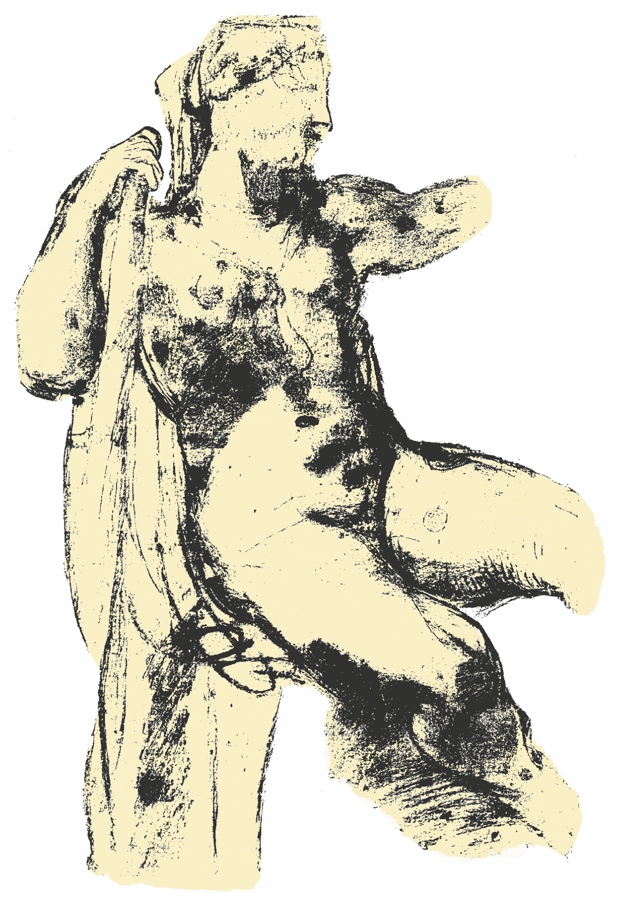

La figura di Iole.
Caratteristiche fisiche e personalità

Iole non è descritta in modo dettagliato sotto il profilo fisico, ma la sua immagine è spesso associata a tratti di bellezza e grazia che caratterizzavano solitamente altri personaggi femminili della tradizione letteraria come i capelli biondi o il pallore della pelle (vd. Bacch., dith. XVI, Call. epigr. LV G.-P = VI Pfeiffer).
Nel drama ateniese, le Trachinie e nell’epistola ovidiana (Her. IX) la presenza di Iole cattura immediatamente l’attenzione di Deianira, che non riesce a distogliere lo sguardo da lei, ma se nel dramma ateniese la giovane emerge all’interno di una schiera di prigioniere, in Ovidio appare subito come oggetto esclusivo della percezione di Deianira. Come nelle Trachinie la giovane Iole viene presentata al lettore dalle parole di Deianira, così nell’epistola. Tuttavia sembra che Deianira nelle due opere abbia di fronte a sé due persone diverse: nella tragedia Deianira definisce la figura di Iole nobile sulla base del suo aspetto. Giudicando l’interiorità dall’esteriorità, deduce che il carattere della ragazza sia nobile, secondo il modello maschile della καλοκἀγαθία. Inoltre la prigioniera non fa altro che piangere, esibendo maggiore dolore o coinvolgimento emotivo rispetto alle altre prigioniere nelle manifestazioni di cordoglio.
Nell’Her. IX Iole è ben diversa dalla schiava sottomessa e in condizioni dimesse per cui Deianira aveva provato compassione: ella appare fiera e superba come una vincitrice o una regina con un’acconciatura di capelli ben ordinata (diversamente da quello che ci si aspetterebbe da una donna resa schiava) e “avanza, rifulgente attorno per il molto oro”.
BACCHILIDE, dith. XVI M.
Τότ’ ἄμαχος δαίμων
Δαϊανείρᾳ πολύδακρυν ὕφα[νεν]
μῆτιν ἐπίφρον’ ἐπεὶ πύθετ’ 25
ἀγγελίαν ταλαπενθέα,
Ἰόλαν ὅτι
λευκώλενον
Διὸς υἱὸς ἀταρβομάχας ἄλοχον λιπαρὸ[ν]
ποτὶ δόμον πέμ[π]οι.
Allora un dio invincibile ordì, contro Deianira, un piano ingegnoso, quando lei venne a sapere la dolorosa notizia: il figlio di Zeus, intrepido in battaglia, inviava nella ricca dimora, come sua sposa, Iole dalle candide braccia.
CALLIMACO, epigr. LV G.-P = VI Pfeiffer
Τοῦ Σαμίου πόνος εἰμὶ δόμῳ ποτὲ θεῖον ἀοιδόν
δεξαμένου, κλείω d’ Εὔρυτον ὅσσ’ ἔπαθεν,
καὶ
ξανθὴν Ἰόλειαν, Ὁμήρειον δὲ καλεῦμαι
γράμμα· Κρεωφύλῳ, Ζεῦ φίλε, τοῦτο μέγα.
“Io sono la fatica letteraria dell’uomo di Samo che accolse in casa un giorno il divino aedo, canto quante pene ebbe Eurito e la bionda Iole e prendo il nome di opera di Omero: caro Zeus, che onore straordinario per Creofilo”.
SOFOCLE, Trach.308-310
Ὦ δυστάλαινα, τίς ποτ’ εἶ νεανίδων; ἄνανδρος, ἢ τεκνοῦσσα; πρὸς μὲν γὰρ φύσιν πάντων ἄπειρος τῶνδε, γενναία δέ τις.[…]
“Deianira: E tu, infelice, chi sei, tra queste giovani? Vergine, o già madre? All’aspetto ti si direbbe ancora ignara di nozze, e nobile di nascita.”
OVIDIO, Her. IX, 121-130
Ante meos oculos adducitur advena paelex,
nec mihi, quae patior, dissimulare licet.
Non sinis averti; mediam captiva per urbem
invitis oculis aspicienda venit,
nec venit incultis captarum more capillis,
fortunam vultu fassa †tegente† suam;
ingreditur late lato spectabilis auro,
qualiter in Phrygia tu quoque cultus eras;
dat vultum populo sublimis, ut Hercule victo
Oechaliam vivo stare parente putes.
“Ma ora davanti ai miei occhi viene condotta una concubina straniera, e io non posso dissimulare le mie sofferenze. Tu non permetti che io distolga lo sguardo; la prigioniera attraversa la città e i miei occhi, loro malgrado, devono guardarla. Né viene coi capelli incolti, alla maniera delle prigioniere, confessando nel volto… la sua condizione; avanza, rifulgente attorno per il molto oro, abbigliata come anche tu lo eri in Frigia. Mostra il volto alla folla, altera come se Ercole fosse stato vinto: penseresti che Ecalia stia ancora in piedi, e che suo padre viva.”.